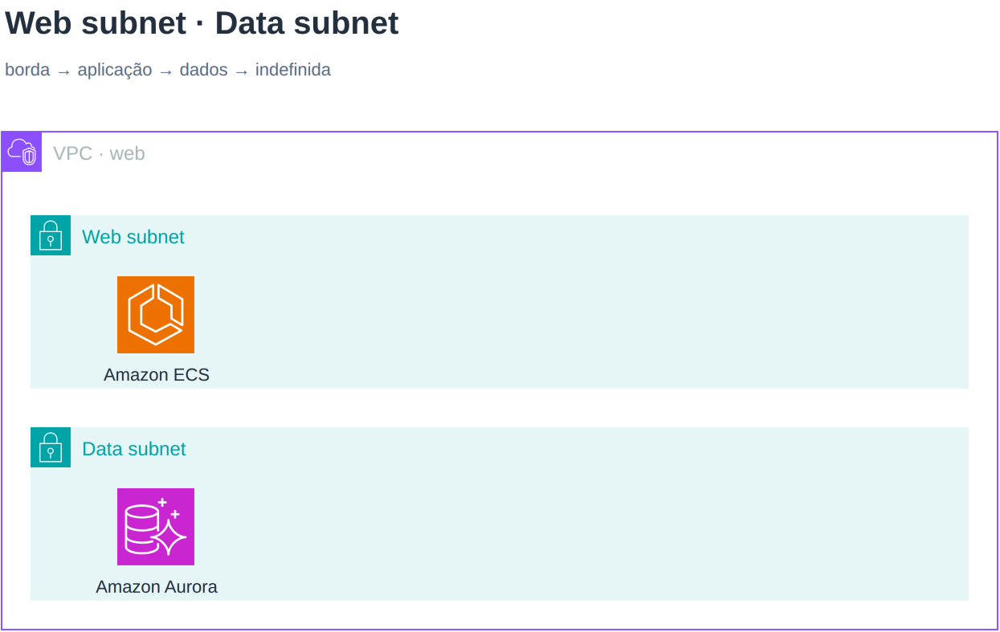
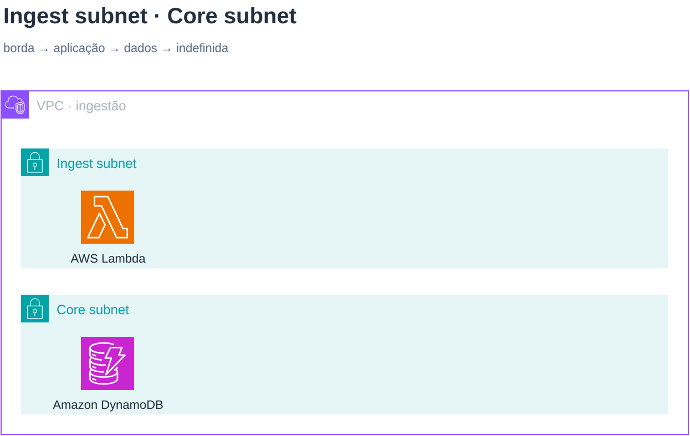
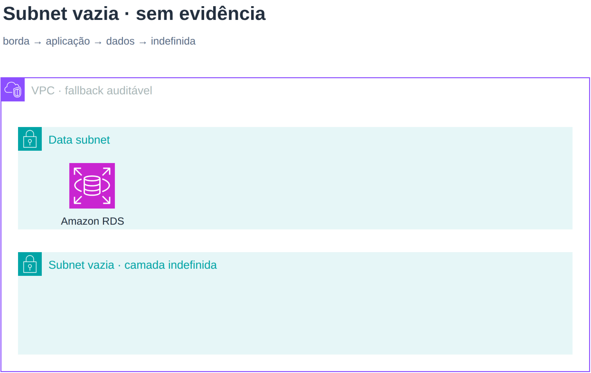

Wayfinder prototype · issue 22
O conteúdo decide a camada.
Derive primeiro. Declare camada só quando a subnet vazia ou mista não oferece evidência suficiente.
borda → aplicação → dados → indefinida
App antes de Data
EC2 entrega evidência de aplicação; RDS entrega evidência de dados.

Web antes de Data
O caso que derruba o alfabeto: ECS sobe, Aurora desce.

Ingest antes de Core
Outro caso adversarial: Lambda é aplicação; DynamoDB é dados.

Vazia não vira chute
Sem evidência, cai no fim com aviso. camada é o escape semântico.